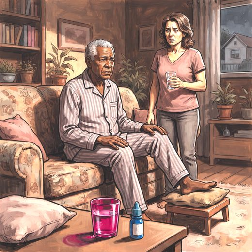

Ferramenta desta aula
Delirium — 4AT. Roda no navegador, sem cadastro.
Consulta rápida à beira do leito
Condutas, doses e interações.
Referências da aula · 11
- 2023 American Geriatrics Society Beers Criteria® Update Expert Panel. American Geriatrics Society 2023 updated AGS Beers Criteria® for potentially inappropriate medication use in older adults. J Am Geriatr Soc. 2023;71(7):2052-81. PMID 37139824. doi:10.1111/jgs.18372.PubMedDOI
- O'Mahony D, Cherubini A, Guiteras AR, et al. STOPP/START criteria for potentially inappropriate prescribing in older people: version 3. Eur Geriatr Med. 2023;14(4):625-32. PMID 37256475. doi:10.1007/s41999-023-00777-y.PubMedDOI
- Montero-Odasso M, van der Velde N, Martin FC, et al. World guidelines for falls prevention and management for older adults: a global initiative. Age Ageing. 2022;51(9):afac205. PMID 36178003. doi:10.1093/ageing/afac205.PubMedDOI
- Seppala LJ, Petrovic M, Ryg J, et al. STOPPFall (Screening Tool of Older Persons Prescriptions in older adults with high fall risk): a Delphi study by the EuGMS Task and Finish Group on Fall-Risk-Increasing Drugs. Age Ageing. 2021;50(4):1189-99. PMID 33349863. doi:10.1093/ageing/afaa249.PubMedDOI
- Inouye SK, Westendorp RGJ, Saczynski JS. Delirium in elderly people. Lancet. 2014;383(9920):911-22. PMID 23992774. doi:10.1016/S0140-6736(13)60688-1.PubMedDOI
- Inouye SK, Studenski S, Tinetti ME, Kuchel GA. Geriatric syndromes: clinical, research, and policy implications of a core geriatric concept. J Am Geriatr Soc. 2007;55(5):780-91. PMID 17493201. doi:10.1111/j.1532-5415.2007.01156.x.PubMedDOI
- Freeman R, Wieling W, Axelrod FB, et al. Consensus statement on the definition of orthostatic hypotension, neurally mediated syncope and the postural tachycardia syndrome. Clin Auton Res. 2011;21(2):69-72. PMID 21431947.PubMed
- Alagiakrishnan K, Wiens CA. An approach to drug induced delirium in the elderly. Postgrad Med J. 2004;80(945):388-93. PMID 15254302. doi:10.1136/pgmj.2003.017236.PubMedDOI
- Fabbri RMA, Moreira MA, Garrido R, Almeida OP. Validity and reliability of the Portuguese version of the Confusion Assessment Method (CAM) for the detection of delirium in the elderly. Arq Neuropsiquiatr. 2001;59(2-A):175-9. PMID 11400020.PubMed
- Inouye SK, van Dyck CH, Alessi CA, Balkin S, Siegal AP, Horwitz RI. Clarifying confusion: the confusion assessment method. Ann Intern Med. 1990;113(12):941-8. PMID 2240918.PubMed
- Freitas EV, Py L, organizadores. Tratado de Geriatria e Gerontologia. 5ª ed. Rio de Janeiro: Guanabara Koogan; 2022.
Documentos oficiais
Leis e publicações do Ministério da Saúde sobre o cuidado da pessoa idosa, de acesso livre.
Abrir os documentos